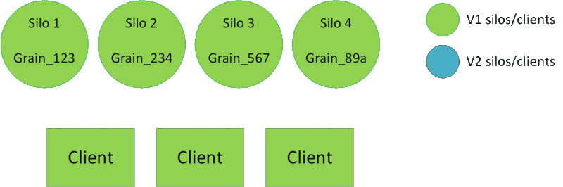

部署新版本的Grains
滚动升级
通过这种方法，您可以直接在环境中部署较新的Silo。这是最简单的方法，但是可能很难中断正在进行的部署并回滚。
推荐配置：
DefaultCompatibilityStrategy调成BackwardCompatibleDefaultVersionSelectorStrategy调成AllCompatibleVersions
var silo = new SiloHostBuilder()
[...]
.Configure<GrainVersioningOptions>(options =>
{
options.DefaultCompatibilityStrategy = nameof(BackwardCompatible);
options.DefaultVersionSelectorStrategy = nameof(AllCompatibleVersions);
})
[...]
使用此配置时，“旧”客户端将能够与两个版本的silos上的激活进行对话。较新的客户端和silos只会在较新的silos上触发新的激活。

使用预生产环境
在这种方法中，您将需要第二个环境(预生产环境)，在该环境中您将在停止生产环境之前部署较新的Silo。生产和预生产Silos和客户端将作为同一集群的一部分。两个环境中的silos可以相互通信，这一点很重要。
推荐配置：
DefaultCompatibilityStrategy调成BackwardCompatibleDefaultVersionSelectorStrategy调成MinimumVersion
var silo = new SiloHostBuilder()
[...]
.Configure<GrainVersioningOptions>(options =>
{
options.DefaultCompatibilityStrategy = nameof(BackwardCompatible);
options.DefaultVersionSelectorStrategy = nameof(MinimumVersion);
})
[...]
建议的部署步骤：
- “V1” silos和客户端已部署并正在生产插槽中运行。
- “V2” silos和客户端开始在预生产插槽中启动。他们将与生产广告位加入同一集群。到目前为止，将不会创建“V2”激活。
- 在预生产插槽中的部署完成后，开发人员可以重定向V2客户端上的某些流量(烟雾测试，目标Beta用户等)。这将创建V2激活，但是由于Grains是向后兼容的，并且所有Silo都在同一集群中，因此不会创建重复的激活。
- 如果验证成功，请继续进行VIP交换。如果没有，您可以安全地关闭预生产群集：如果需要，现有的V2激活将被销毁，而V1激活将被创建。
- V1激活自然会最终“迁移”到V2 Silo。您可以安全地关闭V1 silos。
[！警告!]请记住，无状态工作器没有版本控制，流代理也将在预生产环境中启动。